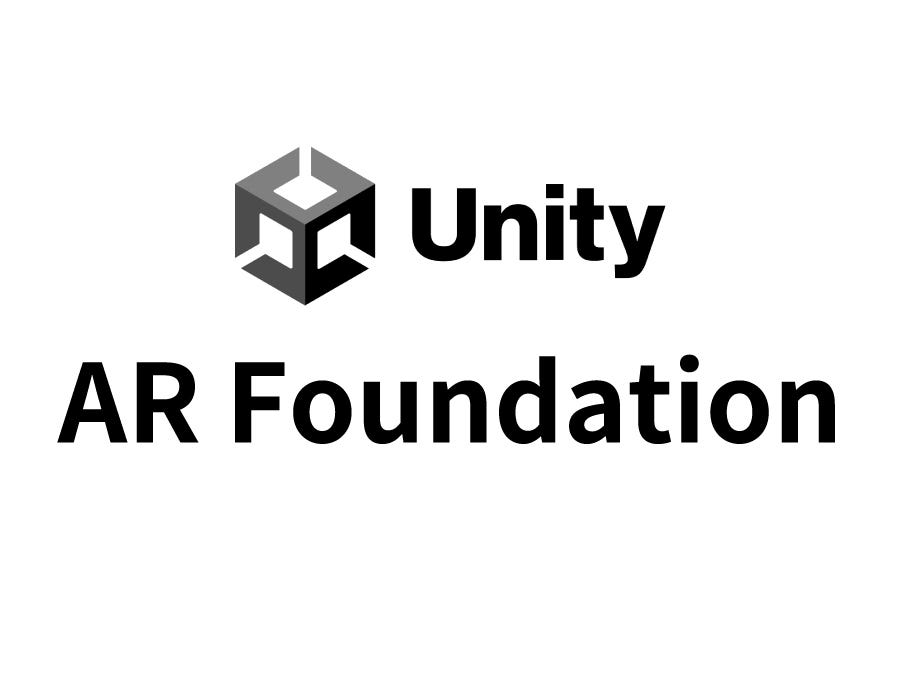

3. A-Frame

Video de Educación con realidad aumentada
Video de arquitectura con realidad aumentada
Video de medicina con realidad aumentada
Video de publicidad con realidad aumentada
Video de los puertos con realidad aumentada
Video de las industrias con realidad aumentada
Video de ingenieria con realidad aumentada
1. Spark AR Studio
Spark AR Studio es una herramienta de Meta que te permite crear efectos y filtros de realidad aumentada para Instagram y Facebook. Es ideal para principiantes y para quienes quieren crear experiencias interactivas para redes sociales, ya que no se necesita mucha experiencia en programación.
Tutorial y referencias:
spark ar
2. Unity con AR Foundation
Unity es una de las plataformas más potentes para la creación de experiencias 3D y de realidad aumentada, utilizada por desarrolladores profesionales de videojuegos y aplicaciones. AR Foundation es un marco de trabajo de Unity que facilita la creación de aplicaciones de AR para dispositivos iOS y Android. Es una opción más avanzada, pero muy completa.
Tutorial y referencias:
unity
3. A-Frame
A-Frame es un marco de trabajo de código abierto para crear experiencias de realidad virtual (VR) y realidad aumentada (AR) en la web. Es genial porque puedes usar HTML para crear las escenas, lo que encaja perfecto con lo que ya estás haciendo. Es muy útil para hacer proyectos rápidos y accesibles desde un navegador.
Tutorial y referencias:
https://aframe.io/docs/1.5.0/introduction/